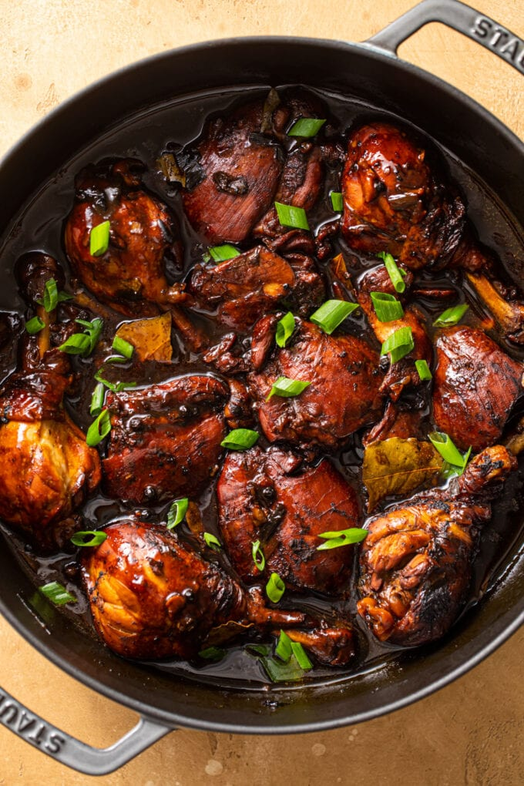
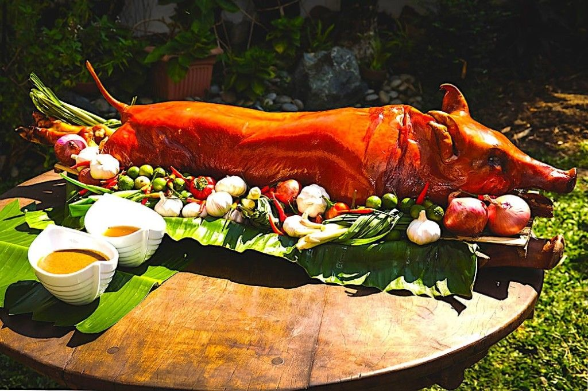
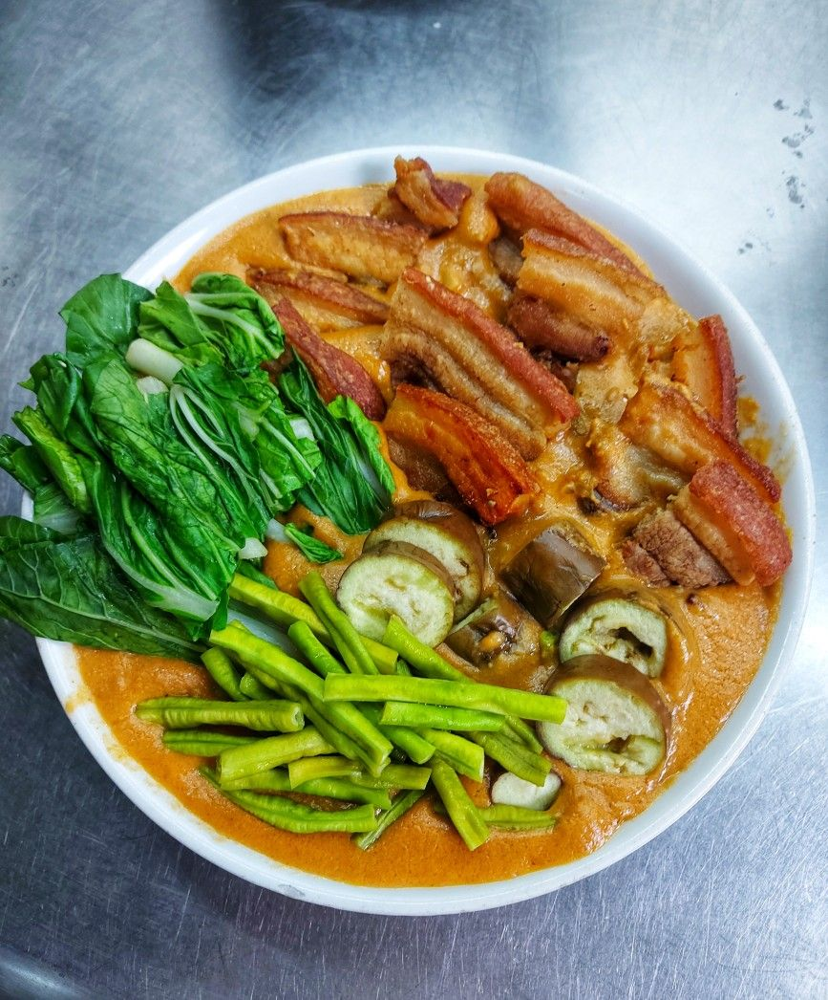
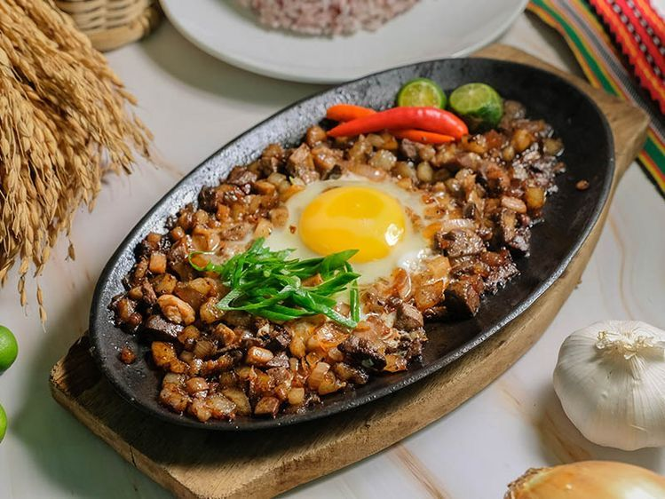
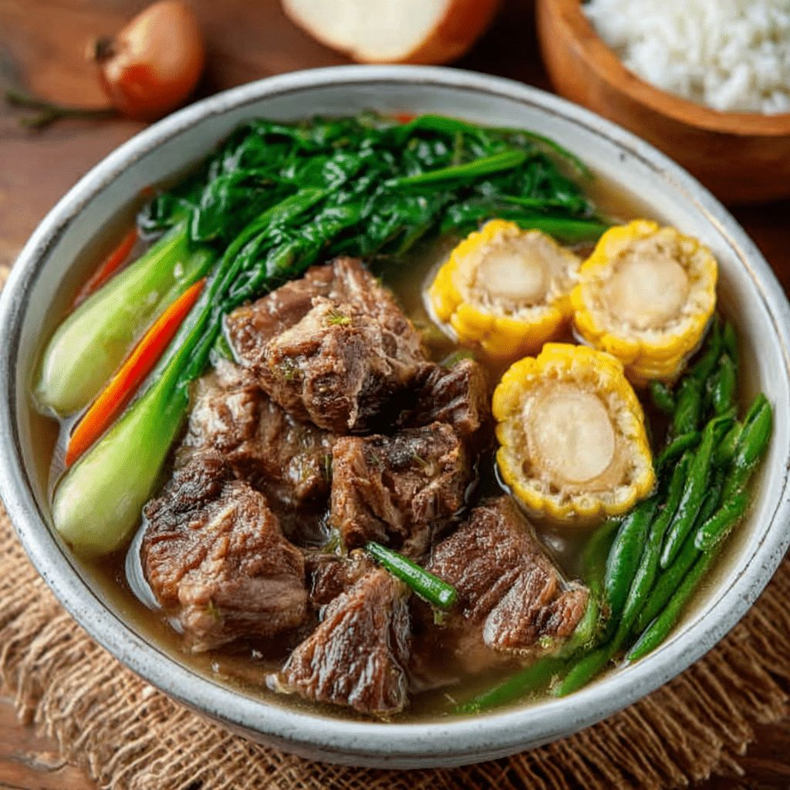
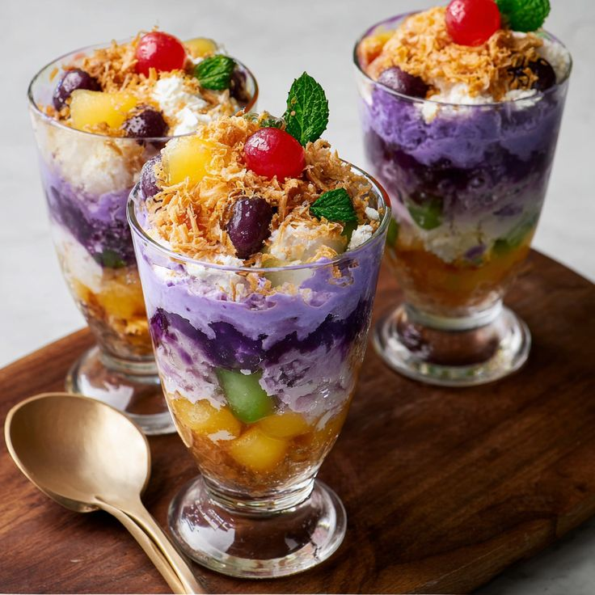
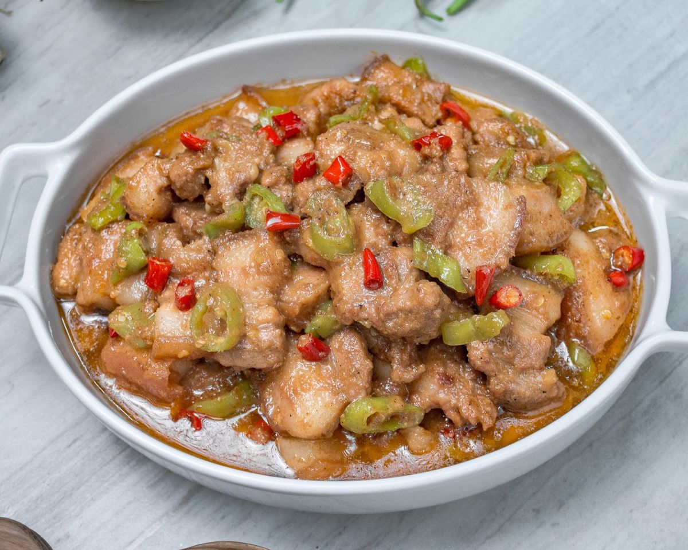
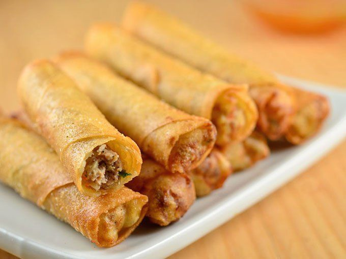

"Taste of Philippines - 10 Must Try Dishes"
- Let your taste bud embark on an adventure with these must savor Filipino delights -

Known as the "unofficial national dish" of the Philippines, adobo features meat (chicken or pork) marinated and simmered in vinegar, soy sauce, garlic, and bay leaves. The tangy-savory flavor profile makes it perfect with steamed rice – a timeless comfort food passed down through generations.

A beloved sour soup made with tamarind (or other sour fruits like kamias) as its base. It includes tender pork belly or ribs, mixed vegetables like kangkong, radish, and eggplant, plus fish sauce for depth. Refreshing and comforting – ideal for rainy days or when craving something light yet flavorful.

The ultimate fiesta centerpiece! A whole pig is roasted over charcoal until the skin is crispy golden brown and the meat inside is juicy and tender. It’s traditionally served with a tangy liver sauce (lechon sauce) – every bite is a celebration of Filipino culinary heritage.

A rich, creamy stew made with oxtail, tripe, and vegetables (eggplant, string beans, banana blossoms) cooked in a peanut sauce base. It’s paired with bagoong (fermented shrimp paste) to balance the nutty sweetness – a dish that showcases the Philippines’ love for bold flavor combinations.

A sizzling crowd-pleaser from Pampanga! It’s made with chopped pig ears, cheeks, and liver, seasoned with calamansi, soy sauce, garlic, and chili peppers. Served smoking hot on a metal plate, often topped with a raw egg that cooks from the heat – perfect for sharing with friends over cold beer.

A hearty soup from Batangas made with beef shanks and marrow bones simmered for hours until the broth is clear, rich, and flavorful. It includes vegetables like cabbage, potatoes, and corn, and is best enjoyed with patis (fish sauce) and calamansi for dipping – a warming meal for cool weather.

The iconic Filipino "mix-mix" dessert! It layers shaved ice with sweet beans, jellies, fruits, ube halaya (purple yam jam), and leche flan, then topped with evaporated milk and vanilla ice cream. Cool, colorful, and satisfying – the perfect treat to beat the tropical heat.

A spicy stew that hails from the Bicol region! Pork is cooked in creamy coconut milk, shrimp paste, and plenty of chili peppers (siling haba or labuyo) for a fiery kick. Despite its heat, the coconut milk adds a mellow sweetness – a must-try for spice lovers.

A robust, tomato-based stew typically made with goat meat (or beef/pork as alternatives). It’s loaded with potatoes, carrots, bell peppers, and liver spread for extra richness. The dish has a slightly sweet and savory taste – a staple at family gatherings and special occasions.

The most popular Filipino spring roll! Thin wrappers are filled with ground pork, shrimp, carrots, and onions, then deep-fried until crispy golden. Served with sweet chili sauce or banana ketchup – perfect as an appetizer, merienda (snack), or party finger food.